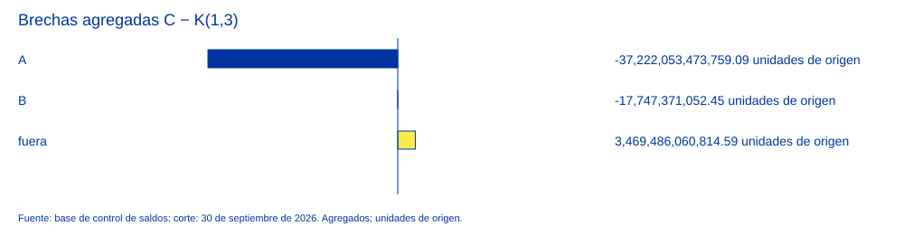

Universo reportado de 95,011 afiliados en retiro programado, corte 30 de septiembre de 2026; una fila por afiliado y sin duplicados según confirmación institucional. Datos reales agregados. El escenario K(1,3) es provisional y no representa elegibilidad definitiva ni viabilidad de la bolsa.
| Segmento | Afiliados | % del universo |
|---|---|---|
| A | 84884 | 89.34% |
| B | 1072 | 1.13% |
| fuera | 9055 | 9.53% |
| no evaluable | 0 | 0.00% |
| A + B | 85956 | 90.47% |





Universo reportado con corte institucional; auditar calidad y presentar el escenario K(1,3) como preliminar.
Calcular K(2) posteriormente con metodología institucional en Python; evaluar C < K(2). No extrapolar K(1).
Valorar 1 SMMLV, mesadas, reajustes, supervivencia del titular y beneficiarios, gastos y descuento durante todo el horizonte vitalicio; contrastar capitales institucionales y datos de beneficiarios.
Proyectar capital inicial y aportes, rendimientos, prestaciones, gastos y activos; valorar obligaciones remanentes y respaldo, incluso después del horizonte explícito. La no heredabilidad del saldo requiere validación jurídica; conservar derechos de sobrevivientes.
Comparar retiro programado, aseguradora y bolsa con prestaciones equivalentes; separar efectos de derechos, rentabilidad, gastos, mutualización y respaldo. La mutualización no implica ahorro automático.
Evaluar mortalidad, rentabilidad, descuento, reajuste del SMMLV, gastos y número de mesadas, con parámetros autorizados y escenarios reproducibles.
Las unidades monetarias y escalas, la disponibilidad del bono y la ausencia de doble conteo no están verificadas; las diferencias de capital son exploratorias. Sexo1 no está validado como sexo del titular. Los campos tipo/estado no demuestran por sí solos derechos ni composición de beneficiarios. Las variables institucionales de descapitalización y desfinanciación requieren validación operacional. La ausencia de duplicados y pertenencia a retiro programado provienen de confirmación institucional; no se verificaron con identificadores. Los valores negativos o no numéricos se excluyen como inválidos; los cálculos no imputan ceros. El umbral de supresión de 10 es provisional y requiere aprobación. No se prueban causalidad ni sostenibilidad vitalicia.